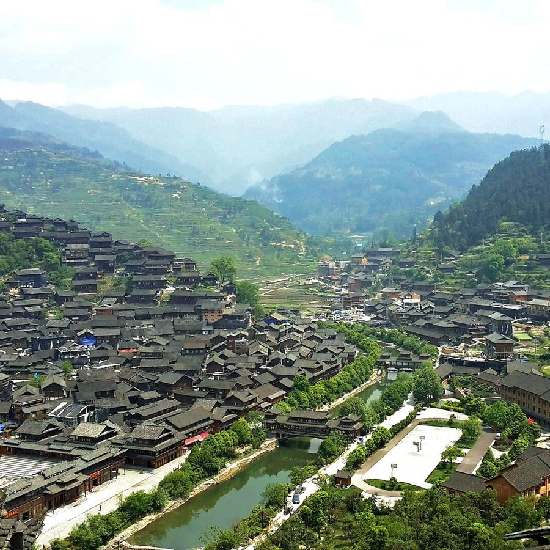
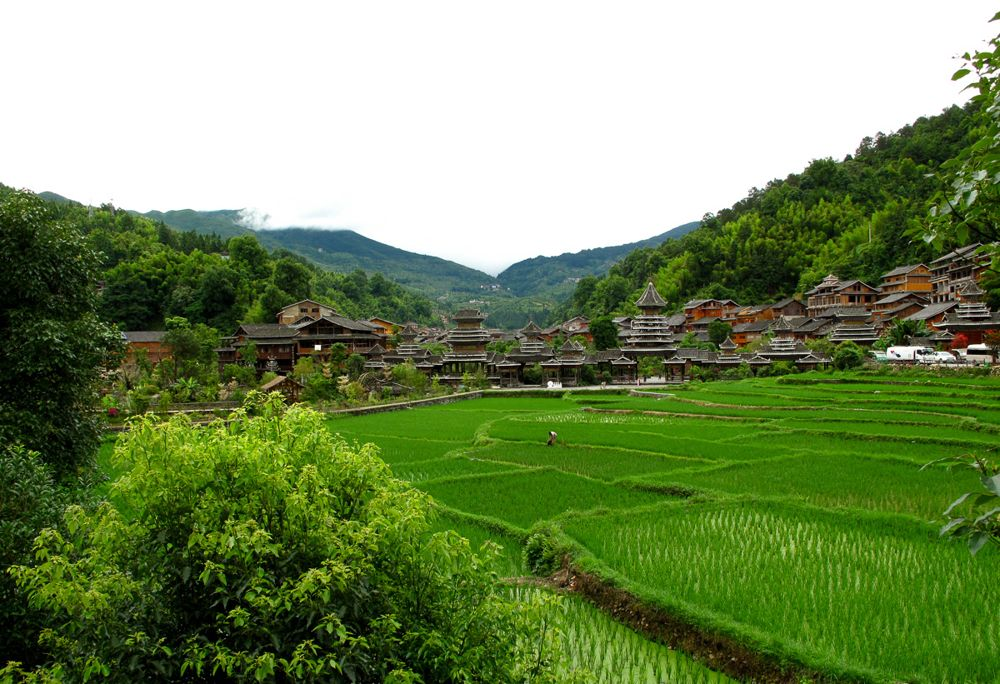
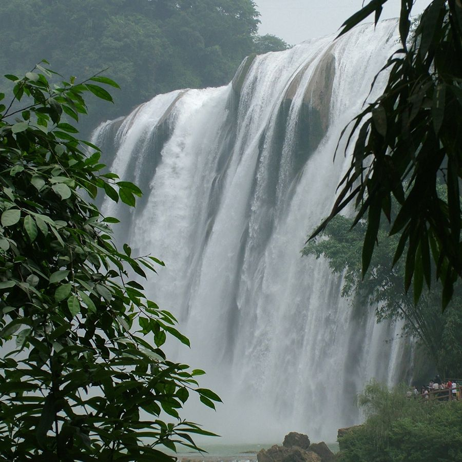
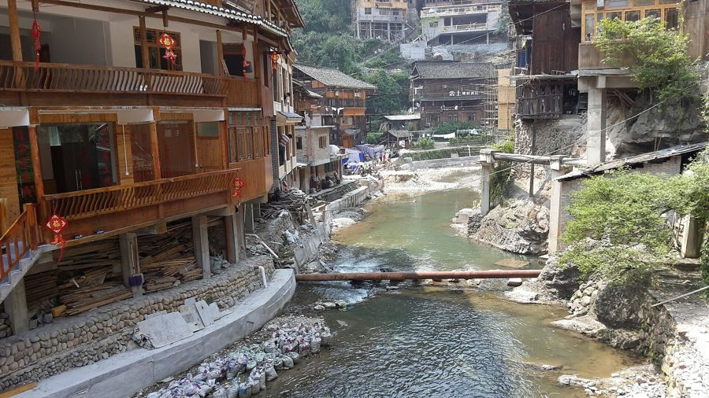

Travel Notes
贵州攻略
四个最值得讲的地点，配上最佳季节与交通 —— 旅行回来，故事刚好讲得完。

最佳 · 10月 - 次年2月西江千户苗寨
Xijiang Qianhu Miao Village
全世界最大的苗族聚居村寨。白天看层层叠叠的吊脚楼，晚上上观景台看万家灯火，运气好还能赶上一场长桌宴。

最佳 · 4月 - 10月肇兴侗寨
Zhaoxing Dong Village
五座鼓楼、五座风雨桥，晚上有侗族大歌演出。比西江安静，适合住两晚，清晨的雾气里的鼓楼最好看。

最佳 · 6月 - 10月丰水期黄果树瀑布
Huangguoshu Waterfall
亚洲第一大瀑布，水帘洞可以从瀑布背后穿过。丰水期声音先到 —— 记得学会 "thunderous" 这个词再去看。

最佳 · 5月 - 9月镇远古城
Zhenyuan Ancient Town
㵲阳河呈 S 形穿城而过，像一幅太极图。夜景沿河两岸都是灯笼，白天爬石屏山看全景。
A Three-Day Route
三天两晚 · 黔东南线
一条最顺的非遗动线：从苗寨到侗寨，再借道凯里返程 —— 沿途能集 9 枚章。
D1
贵阳 → 西江千户苗寨
高铁到凯里南站转车，中午进寨。下午逛嘎歌古巷，晚上长桌宴 + 观景台夜景。可集章：西江、长桌宴、酸汤鱼。
Stamps: Xijiang / Long Table / Sour Soup
D2
西江 — 肇兴侗寨
上午包车经榕江到肇兴（约 3h），下午逛鼓楼群与风雨桥，晚上看侗族大歌演出。可集章：肇兴、鼓楼、大歌、风雨桥。
Stamps: Zhaoxing / Drum Tower / Grand Song / Wind-Rain Bridge
D3
肇兴 — 丹寨 — 返程
从江站返回凯里方向，顺路在丹寨停半天：蜡染工坊画一块自己的布，再从凯里南高铁返程。可集章：蜡染、蓝染侗布。
Stamps: Batik / Indigo Cloth